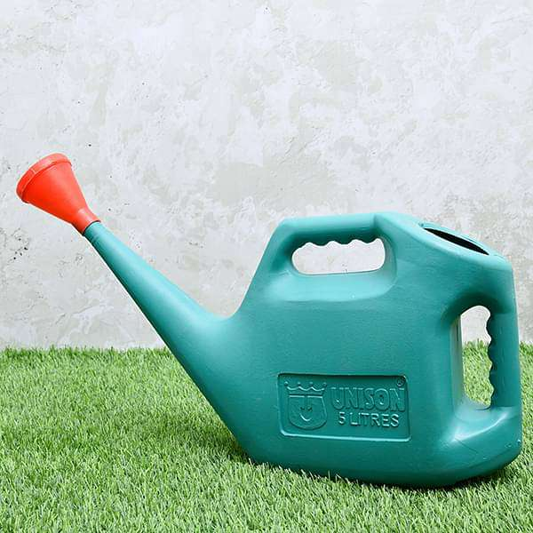

Excellent to be grown in your homes or offices, Bonsai Plants are interpreted as the best plants for indoor gardeners. These beautiful plants are clung to Japanese traditions and standards and have a unique appearance.
What is a bonsai tree / plant?
A bonsai tree is an artificial creation of natural tree structures in a dwarf form. The urban residents are very fond of this tree as it relishes nature and adds wonder to their houses. These trees have twisted trunks and sparse leaves.
Uses of bonsai plants
Bonsai plants have various health and mental benefits. It helps in cleansing the volatile organic compounds (VOCs) available in the air, in your workplaces, and bringing in positive vibes to the environment. Growing and planting a Bonsai Plant is an excellent hobby for many people as it acts as a stress buster and makes you patient and physically energetic.Bonsai plants help in restoring sore throats, coughs, exhaustion, and drowsiness. Referred to as a “Plant of Hope,” it instructs you that it will make things better for you if you take care of the surroundings.Having Bonsai Plants stimulates your learning and boosts your immunity. Often used to gift it to the near and dear ones, these plants also help treat depression and anxiety.
How to care a bonsai plant?
Bonsai plants are best to plant in the half-concealed sun, treated with the right soil and fertilizer. A bonsai plant will become one of the most favorite plants to bring a greener and peaceful corner to live. Shrivel it down a little, enough to set on your table or put it on your balcony, making a fantastic area to look for.
Bonsai plant making
Bonsai plant making is a little tricky.A bonsai tree is created by selecting a source material tree and training it in classic or modern styles Bonsai trees are moulded into specific shapes and kept in pots to limit their growth.
Bonsai plants benefits
Bonsai plants or trees are adorable buddies and they have many bonsai plants benefits They provide more than simply entertainment they also provide countless physical spiritual and personal benefits.
Bonsai care
Bonsai plants require regular care and attention to ensure their health and appearance. This includes proper watering, fertilization, pruning, and repotting. Consider consulting with a professional bonsai expert for tips on bonsai care.
Bonsai pruning
Pruning is an important part of bonsai care and can help maintain the tree's shape and health. It's important to use proper pruning techniques and to prune at the right time of year.
Bonsai wiring
Wiring is another technique used to shape and train bonsai plants. It's important to use proper wiring techniques and to monitor the tree for signs of wire damage.
Bonsai soil
Choosing the right soil for your bonsai plant is important for its health and growth. Consider using a well-draining soil mixture that is specifically designed for bonsai trees.
Bonsai pots
Bonsai plants are typically grown in small pots that are designed to limit their growth and maintain their shape. Consider choosing a pot that is well-suited to your bonsai plant and its growing needs.
Bonsai styles
There are many different bonsai styles, including formal upright, informal upright, and slanting. Consider exploring different bonsai styles to find one that suits your preferences.
Bonsai tools
Proper bonsai care requires the use of specialized tools, including shears, wire cutters, and concave cutters. Consider investing in high-quality bonsai tools for best results.
Bonsai diseases
Bonsai plants are susceptible to a number of diseases, including fungal infections and insect infestations. It's important to monitor your bonsai plant for signs of disease and to take prompt action if necessary.
Bonsai pests
Bonsai plants can also be affected by pests, including spider mites and scale insects. Consider using natural pest control methods or consulting with a professional bonsai expert for help with pest management.
RELATED PRODUCTS
GARDENING TOOLS AND APPLIANCES
HAND TROWEL
Transplanting Trowel No. MMI 83 - Gardening Tool
₹99/-

WATERING CAN
Gardening Water Can No. 1117 ( 5 ltr) - Gardening Tool
₹239/-
GARDEN GLOVES
Nightstar Hand Protectors Garden Gloves with Fingertips Claws